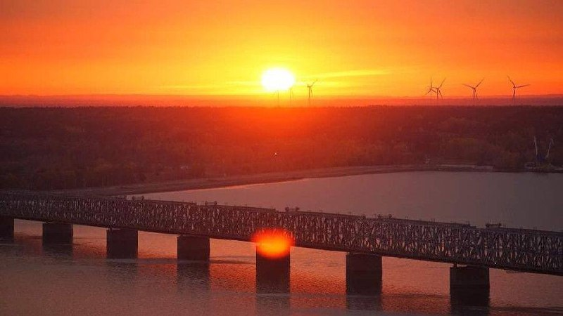
01
Общество и городская среда · событие дня

К делу привлекли Ростехнадзор и Минимущества (земля под объектом находится в аренде до 2061 года).…
Более 30 лет он работает в родном университете, пройдя путь от заведующего лабораториями до директора Института авиационных технологий и управления.…
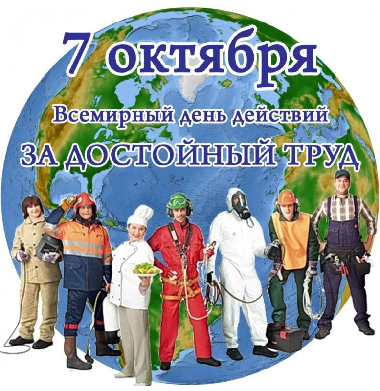
Достойный труд — это справедливая зарплата, безопасное рабочее место, уважение к человеку и возможность гордиться своим делом. Это касается всех: металлурга и учителя, врача и водителя, фермера и инженера.…
К делу привлекли Ростехнадзор и Минимущества (земля под объектом находится в аренде до 2061 года).…
Началась замена окон в доме №52 и наиболее пострадавшем доме №54.…
На улице Авиационной в Засвияжском районе Ульяновска началось строительство нового пешеходного тротуара протяженностью 900 метров — об этом сообщили в администрации города.…
Мэрия также запросила договор аренды 2014 года у регионального Минимущества.…
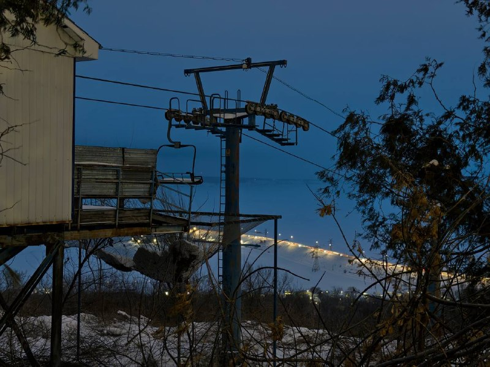
В свет вышло практическое руководство «Интервью для продвижения НКО», ориентированное на сотрудников благотворительных фондов и общественных организаций — об этом сообщили авторы издания на платформе Ridero и сайте медиацентра «Клевер».…
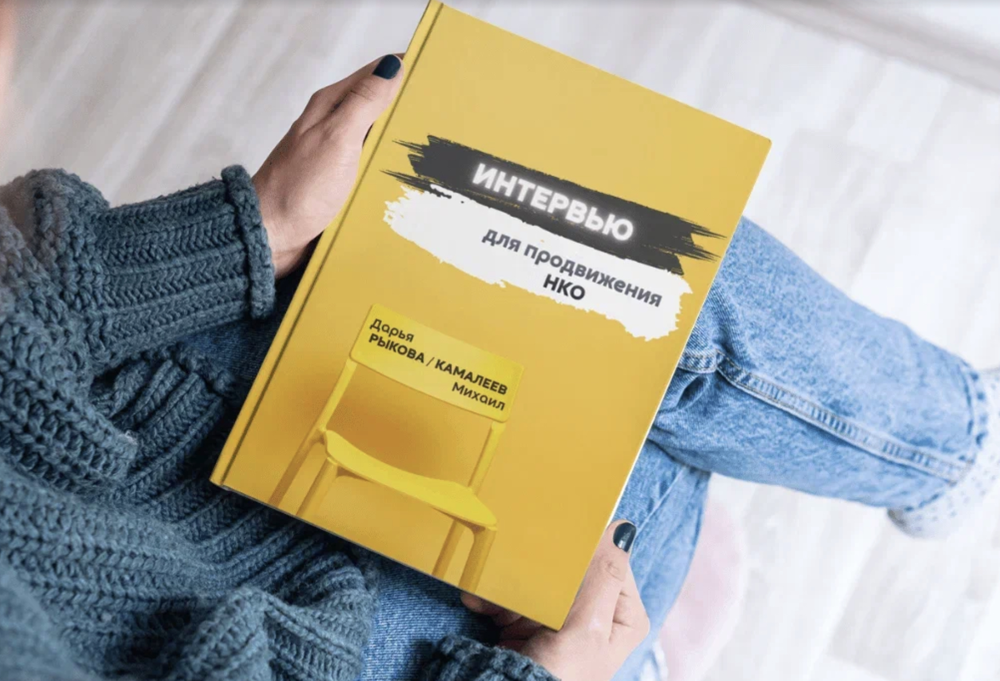
Учеба у преподавателей «советской закалки» позволила успешно освоить профессию, а встреча на защите диплома с рекрутером определила выбор компании, в команде которой Александр остался на долгие годы.……
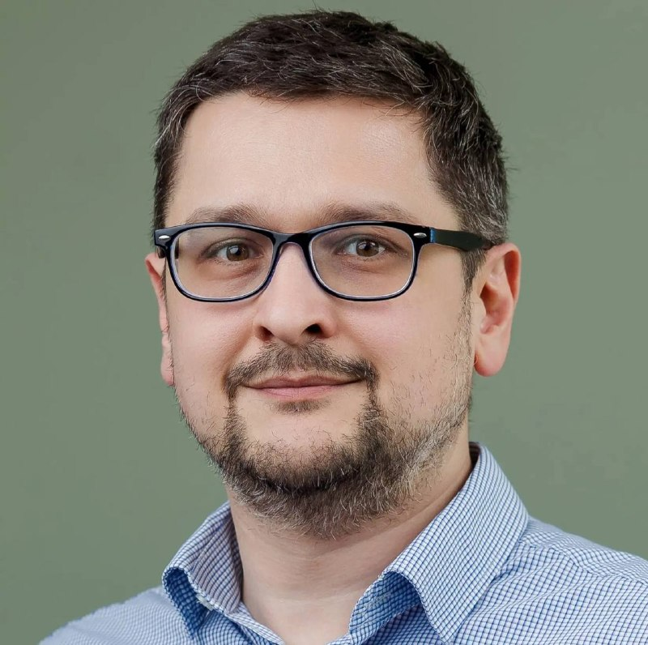
Наш Президент — пример беззаветного служения Отечеству.…
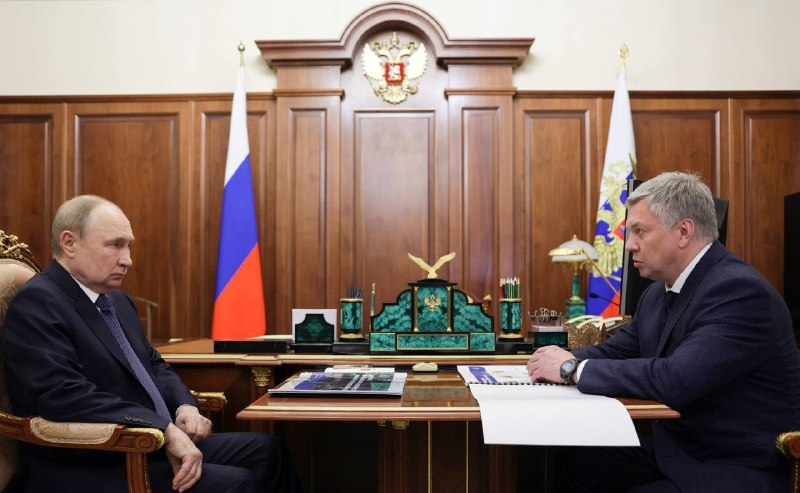
Путин поручил дать рассрочку на 15 лет. Нагрузка на бюджет упала — область начала выбираться из кризиса.
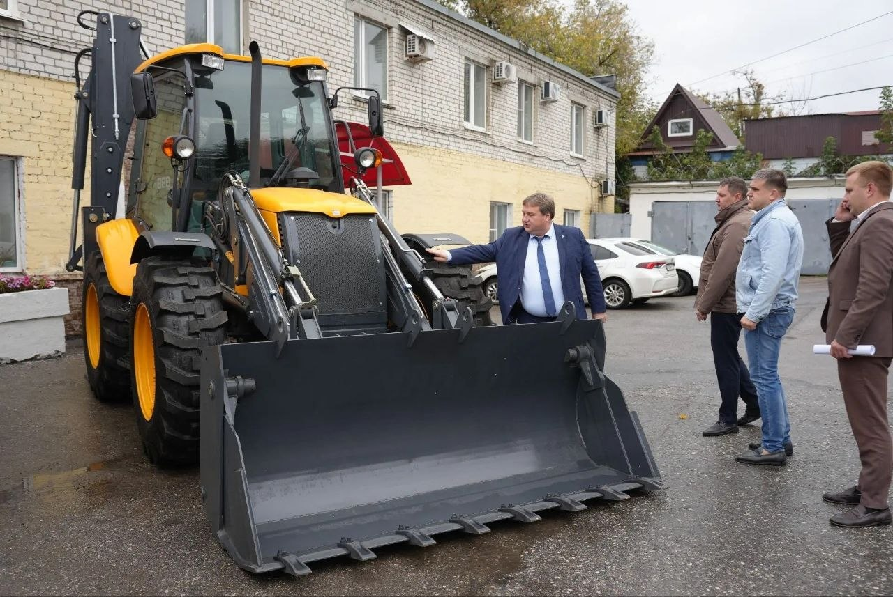
Автопарк МБУ «Дорремстрой» пополнился двумя новыми экскаваторами-погрузчиками отечественной сборки — об этом сообщил глава Ульяновска Александр Болдакин.…
Лидером по числу открытых вакансий в Ульяновской области остается филиал АО «Ил» – «Авиастар», которому требуется 417 новых сотрудников — об этом сообщили в региональном Агентстве по развитию человеческого потенциала и трудовых ресурсов.…
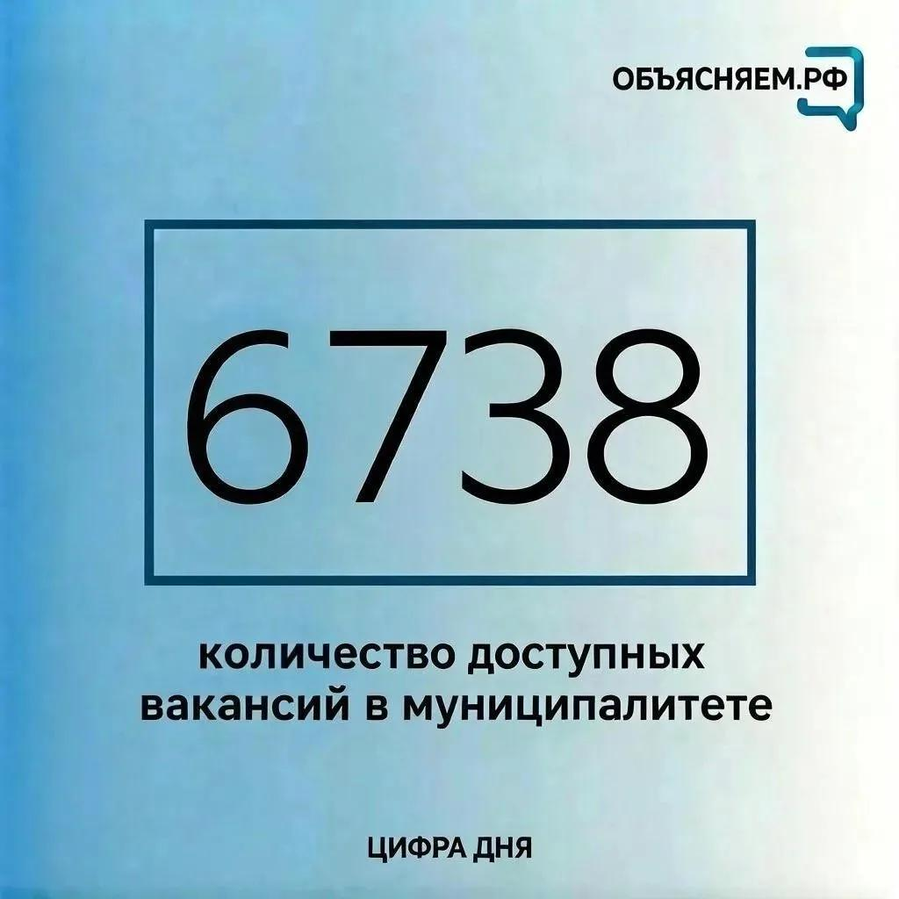
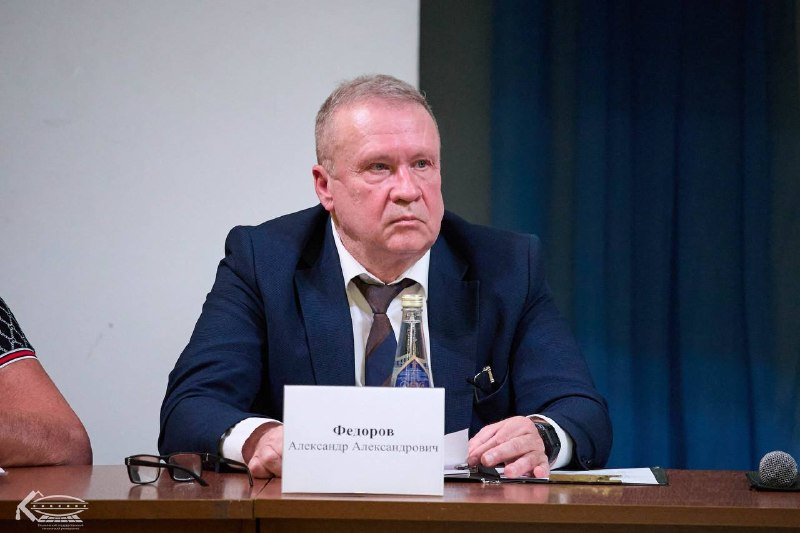
BMS помимо прочего станет автоматически подогревать блок до безопасных температурных значений — чтобы не допускать зарядку холодных аккумуляторов.…
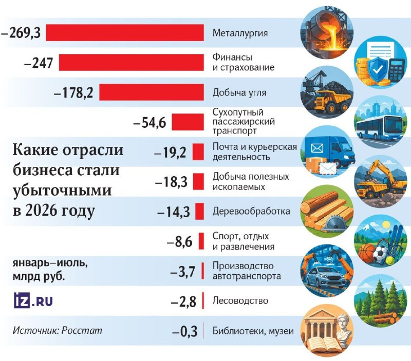
Ульяновский автозавод внедряет модернизированную систему активной безопасности TCS НАМИ.…
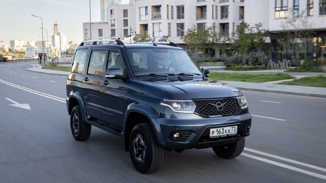
Ситуацию с ним оценили как неоднозначную — налог собирают, цены для туристов из-за него растут, но на что идут деньги, уплачиваемые гостиницами и другими средствами для размещения приезжих, неизвестно.…
Сейчас налог приносит области 25 млн рублей в год, но куда именно идут средства — непонятно.…
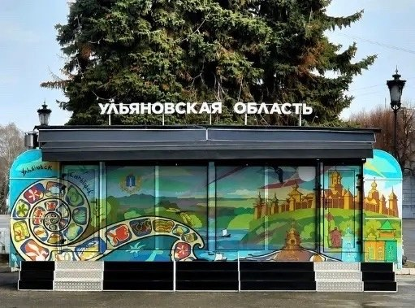
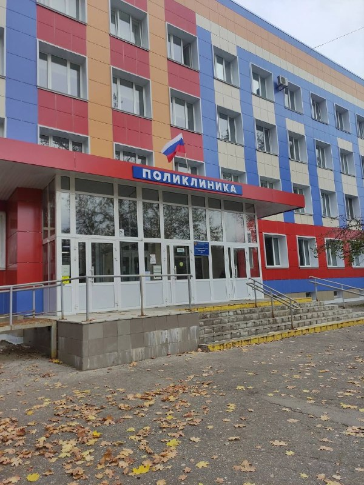
😄 🤦 Дают бумажечку с номером очереди. Говорят, если через месяц-полтора не позвоним, приходите сами узнавайте. 🤦 И так же с УЗИ. Мы вам позвоним, как место будет. 🤦 Это вообще нормально?…
🔔 Смотрите прямую трансляцию 8 октября в 14:00 в ВКонтакте и Одноклассниках .…
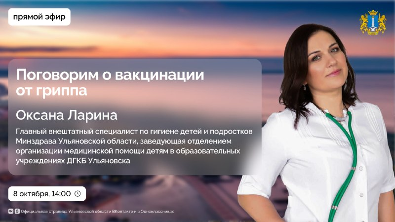
Качественную медицинскую помощь получат 140 тысяч жителей областного центра, а также население Ульяновского, Сенгилеевского и Цильнинского районов.…
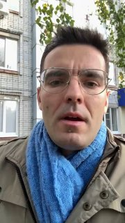
В частности, добавить вакцинацию от вируса папилломы человека (ВПЧ).…
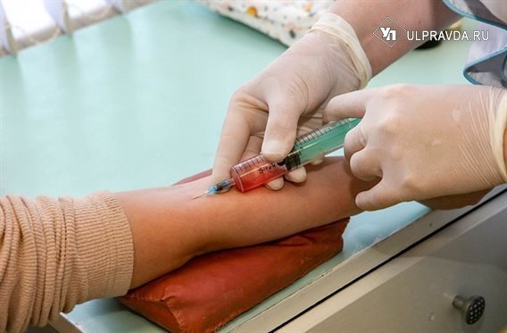
В Карамзинском зале Дома Правительства прошла торжественная церемония, посвящённая празднованию Дня учителя.…
Торжественное мероприятие, посвященное празднованию Дня СПО, состоялось 6 октября в ЦКК «Патриот».…
Под руководством опытных инструкторов они прошли тематические практико-ориентированные площадки, а также познакомились с условиями поступления в военные учебные заведения.…
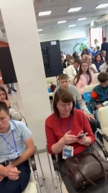
Учителям вручили знаки «Отличник просвещения», звания «Почётный работник сферы образования» и почётные грамоты.…
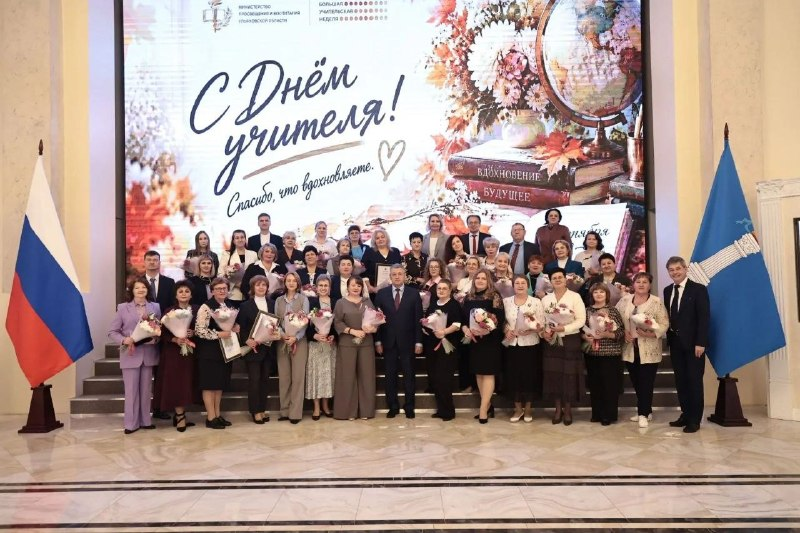
Система будет фиксировать и экзаменаторов, и учеников.…
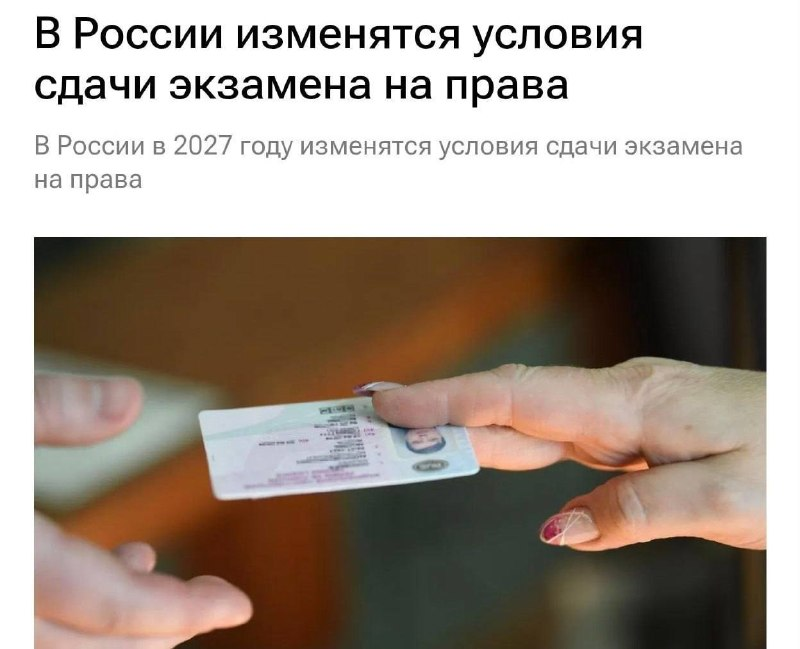
Обновление уже возмутило студентов — они считают, что проверка знаний превращается в тотальный контроль процесса написания.
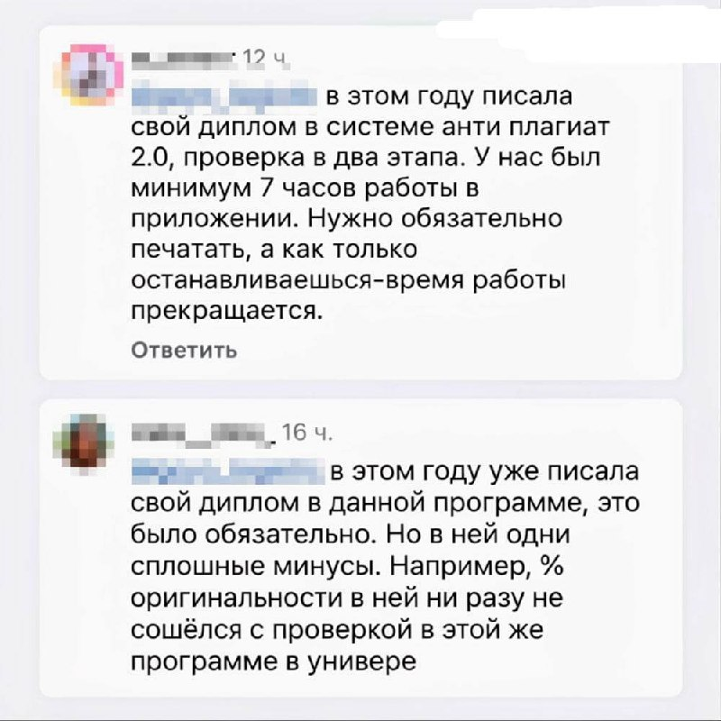
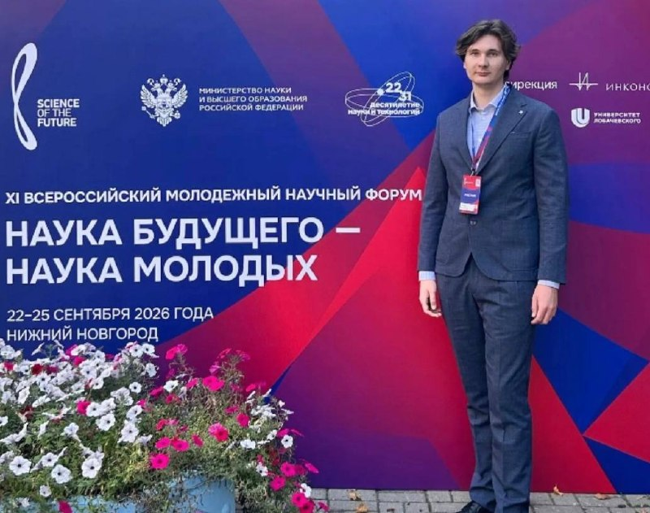
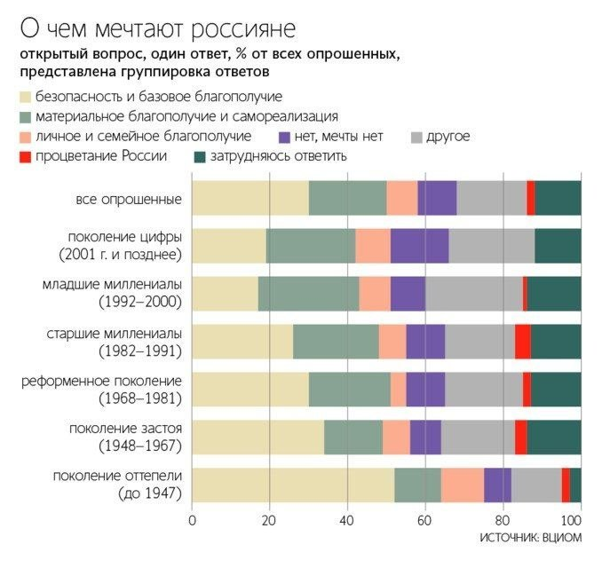
О семейном счастье говорят 8% респондентов, а процветание России волнует лишь 2%. 👍 / 👎 - А вы о чём мечтаете?…
Каждый пятый респондент (20%) мечтает о материальном благополучии и самореализации: о покупке дома, квартиры, путешествиях, богатстве и достатке, достойной пенсии и карьере.…
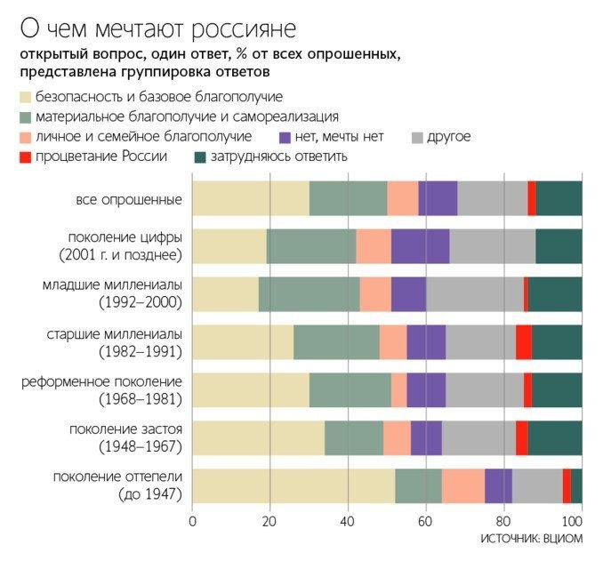
А тем временем три бригады уже меняют окна .
Дополнительный сбор средств в поддержку жителей Ульяновска, пострадавших от последствий атаки беспилотников, открыло региональное отделение Народного фронта — об этом сообщили в общественной организации.…
Внести любую сумму можно через QR-код Мы в Telegram | Мы в…
Начался монтаж в доме № 52 (около 90 рам) и доме № 54, следом застеклят дома на Орджоникидзе, 53 и Юности, 49.…
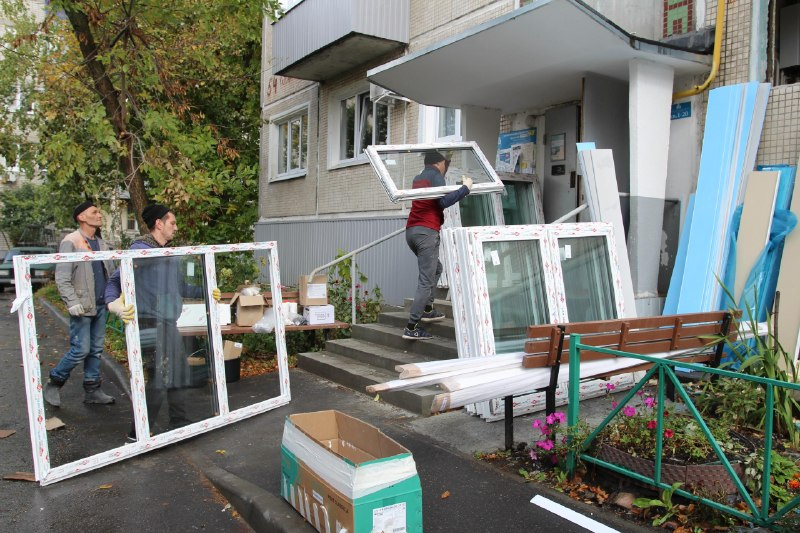
Три бригады рабочих ведут замену оконных блоков и стеклопакетов в многоквартирных домах северной части Ульяновска, пострадавших от атаки беспилотников — об этом сообщили в администрации города.…
✔️ При оплате всей суммы сразу есть скидка Консультация юриста бесплатная!…
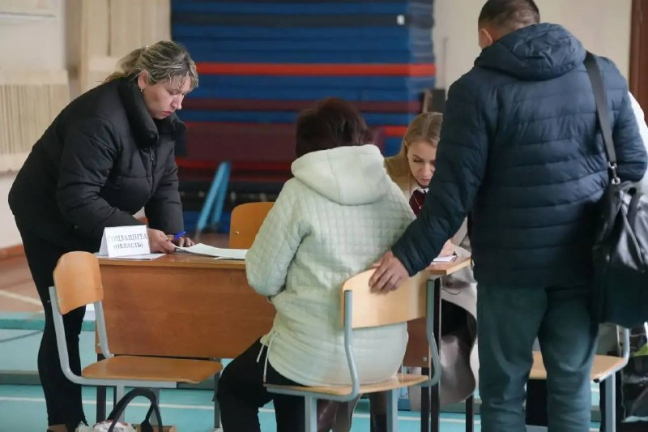
Подмышки + тотальное бикини + голени — 1900 ₽ вместо 3500 ₽. Только сегодня для новых клиентов Если хотите действительно качественную лазерную эпиляцию — начните курс у нас.…
Выдано три предписания, два исполнены, сообщает ведомство.…
С начала года Россельхознадзор провёл 10 профилактических визитов на хлебоприёмные предприятия Ульяновской области, где хранится зерно.…

В запасе уже есть 900 тонн пескосоляной смеси, дополнительно планируют закупить ещё 2,6 тысячи тонн.…
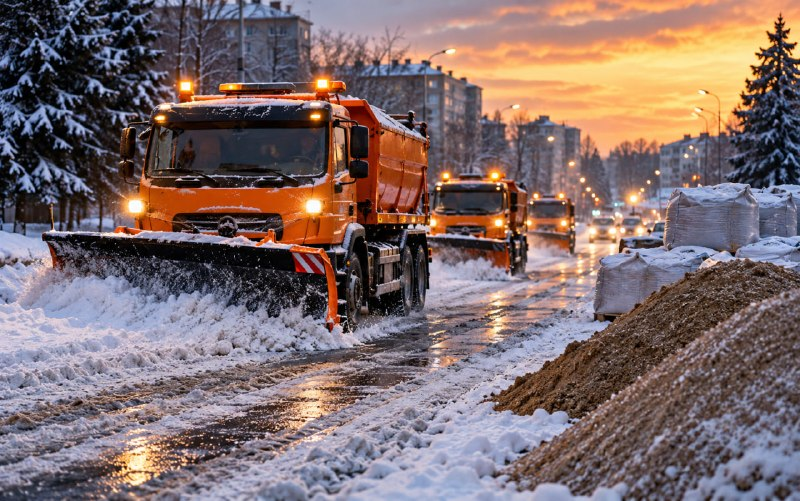
Все эти дома обслуживает один и тот же руководитель — г-н Громов, который одновременно умудряется возглавлять сразу четыре управляющие компании: «Прометей», «Развитие», «Дельта» и «Ренессанс Сити». Многостаночник.…
Он утверждает: это опасная оползневая и историческая зона, где стройка запрещена, а с общественностью проект не обсуждали.…
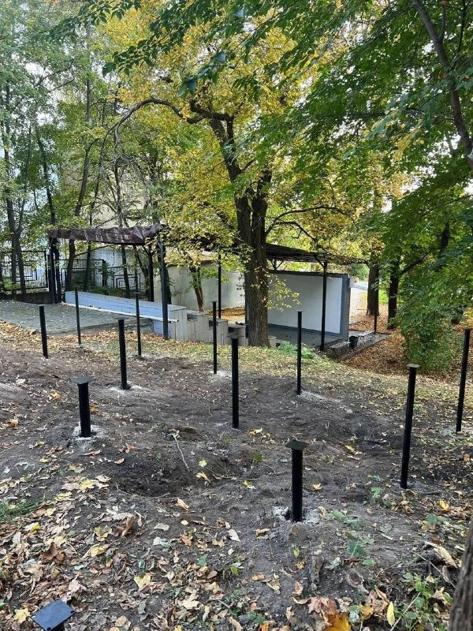
Они совмещают функции экскаватора (глубина копания 5,8 м) и ковша-погрузчика на 1,2 кубометра, а в комплекте идет гидромолот.…
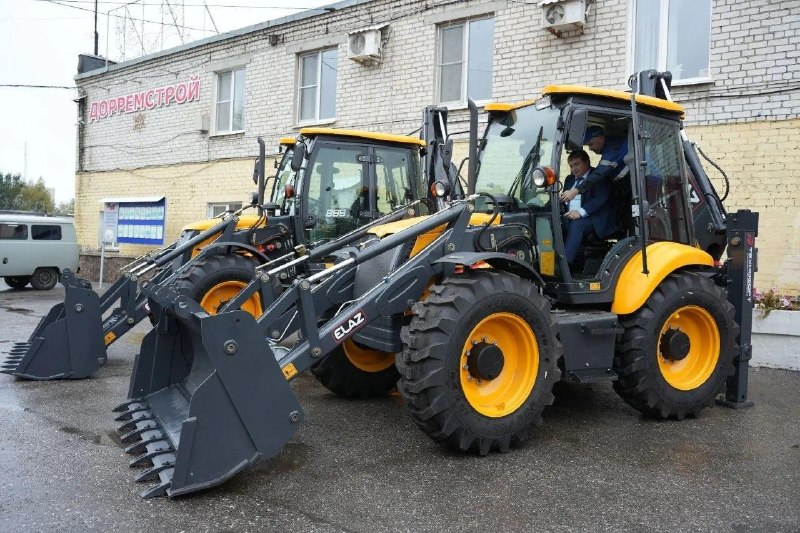
Вас также ждут музыкальный салон и гастрономический ужин. 18+. 📍 Где: Гостиная (ул.…
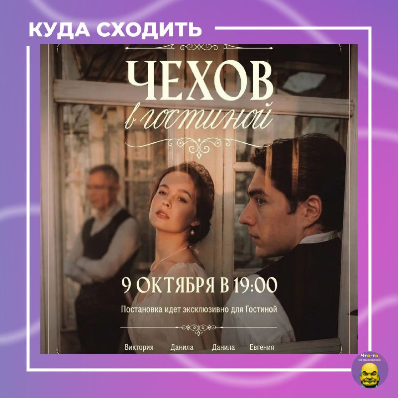
В прошлом году этот показатель составлял 99,7%, уточняет НСИС.
📲 Читайте Россию в МАКС 🇷🇺 Подписаться | Поделиться…
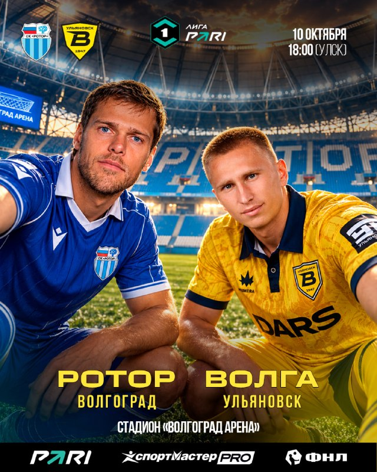
Или как говорят здесь «Центре для синих воротничков» Также немного о работе с муниципалитетами в части реализации партийного…
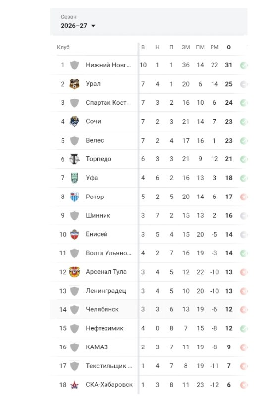
Очередное волжское дерби, успех в котором мог бы укрепить позиции…
6 октября под председательством Геннадия Спирчагова в Правительстве состоялось заседание совета по вопросам содействия…
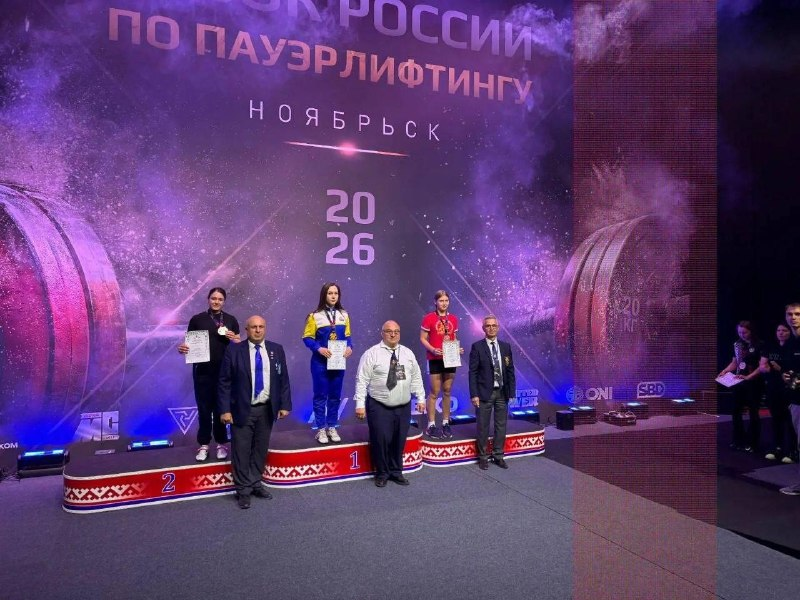
Проверим память на афоризмы от президента вместе с ними!…
Для ульяновской «Волги» домашний турнир станет огненным крещением после громкой рокировки тренеров в клубе.…
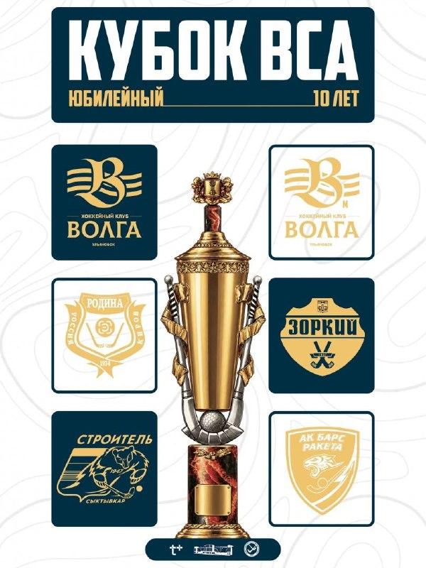
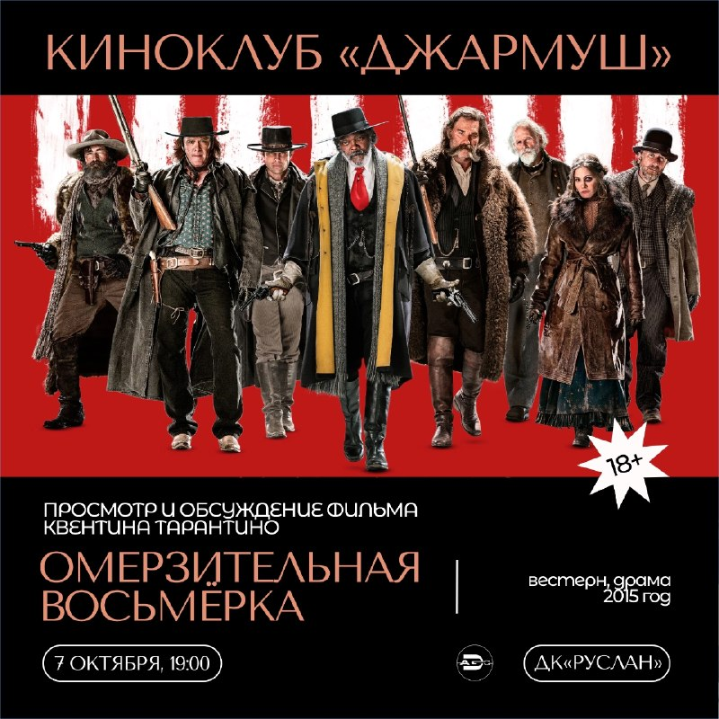
Легендарный охотник за головами Джон Рут по кличке Вешатель конвоирует заключенную. По пути к ним прибиваются еще несколько путешественников.…
На монете изобразят архитектурный ансамбль обители.…
Четверг, 8 октября 20:00 — виниловый вечер группы «Золотые зубы» в баре «Довлатов»; 20:00 — трибьют Linkin Park в «Ржавом ключе» Пятница, 9 октября 18:30 — фортепианный концерт Василия Щербакова «Подношение Шостаковичу» во Дворце молодежи.……
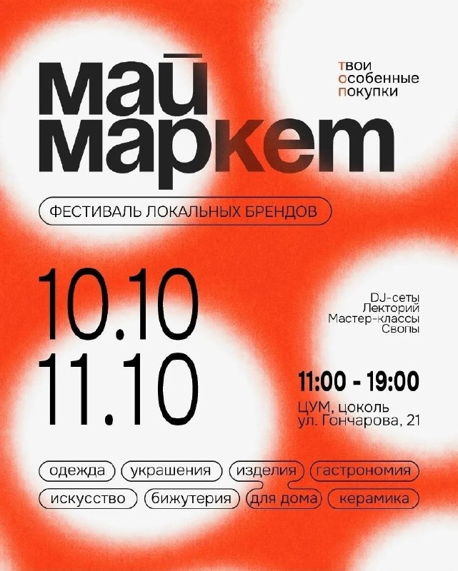


| Тема | Завтра | Ожидание | Уверенность |
|---|---|---|---|
| БПЛА и воздушные угрозы | ↓ спад | ~18.2 упоминаний | средняя |
| Суды и криминал | ↓ спад | ~31.7 упоминаний | средняя |
| Губернатор / власть | ↓ спад | ~28.8 упоминаний | средняя |
| Транспорт и дороги | ↓ спад | ~25.2 упоминаний | средняя |
| Авиапром / УКБП / Ил-114 | ↓ спад | ~6.5 упоминаний | средняя |
| Городская среда | ↑ рост | ~26.1 упоминаний | средняя |